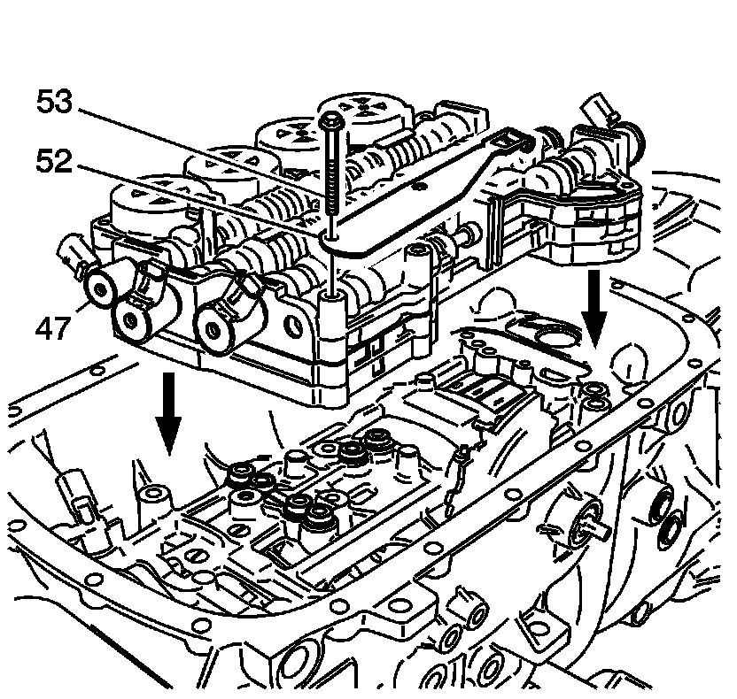
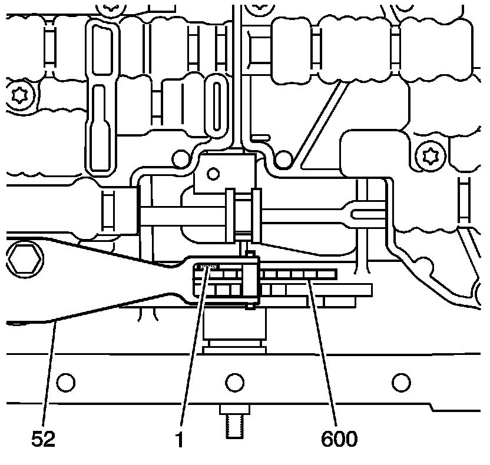

Control Valve Body Accumulator Assembly Installation
Control Valve Body Accumulator Assembly Installation

1. Install the NEW overdrive clutch fluid passage sleeve (39) into the case.
2. Install the NEW center support fluid passage sleeve (38) into the case.

3. Install the control valve body accumulator assembly (47) onto the case.
4. Install the detent lever spring (52) onto the case.
5. Install the control valve body bolts (53) into the case and hand tighten.

6. Install the control valve body accumulator assembly bolts (49, 51) into the case (24) and hand tighten.

Notice: Refer to Fastener Notice .
7. Tighten the control valve body accumulator bolts in sequence.
Tighten the control valve body accumulator bolts to 11 N.m (8 lb ft).

8. Install a 0.8 mm spacer (1) between the manual shaft detent lever (600) and the manual shaft detent assembly (52).
9. Tighten the detent assembly bolts.
Tighten the control valve body bolts to 11 N.m (8 lb ft).
10. Remove the spacer (1).